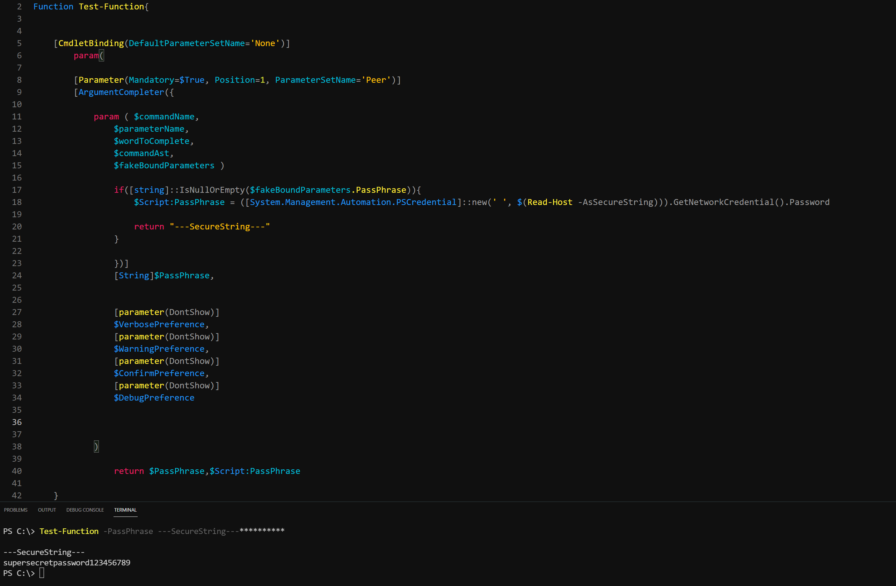
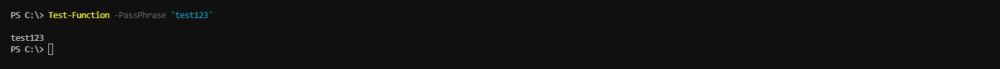
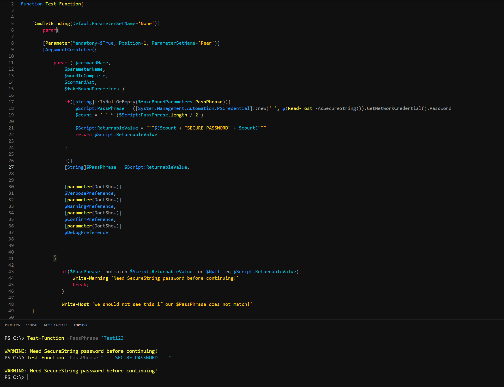
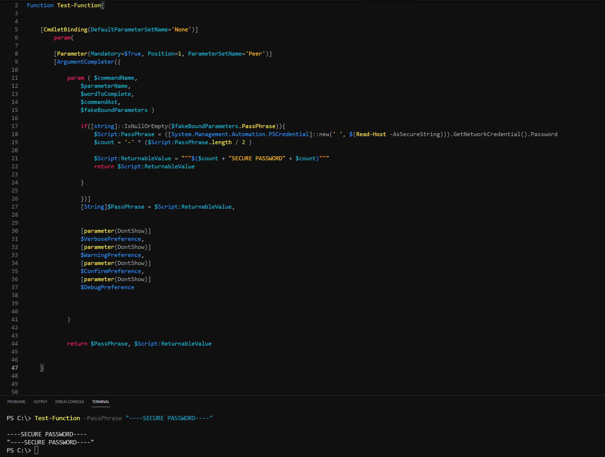

A Better Implementation of SecureString Passwords for Powershell Modules
Function Test-Function{
[CmdletBinding(DefaultParameterSetName='None')]
param(
[Parameter(Mandatory=$True, Position=1, ParameterSetName='Peer')]
[ArgumentCompleter({
param ( $commandName,
$parameterName,
$wordToComplete,
$commandAst,
$fakeBoundParameters )
if([string]::IsNullOrEmpty($fakeBoundParameters.PassPhrase)){
$Script:PassPhrase = ([System.Management.Automation.PSCredential]::new(' ', $(Read-Host -AsSecureString))).GetNetworkCredential().Password
$count = '~' * ($PassPhrase.length / 2 )
$Script:ReturnableValue = "$($count + "SECUREPASSWORD" + $count)"
return $Script:ReturnableValue
}
})]
[String]$PassPhrase = $Script:ReturnableValue,
[parameter(DontShow)]
$VerbosePreference,
[parameter(DontShow)]
$WarningPreference,
[parameter(DontShow)]
$ConfirmPreference,
[parameter(DontShow)]
$DebugPreference
)
if($PassPhrase -notmatch $Script:ReturnableValue){
Write-Warning 'SecureString form of password is mandatory. Please use tab-completor with the parameter and try again.'
break;
}
}
To get a better understanding of the code above, lets take a deep dive into road that let here...
To start off, a minor backstory!
As I started learning how to use Register-ArgumentCompletor as well as dynamic parameters back in the day, I was always curious about if passwords could be efficiently and securely integrated using them. So, I started researching and basically going into a rabbit hole of searching forums, including Reddit, where I asked many times if this could be done, but could not find a solid answer. It was the usual "Its not possible" or "The only way is to use Read-Host [-AsSecureString] and specify it after the module or script executes". Eventually I gave up and time moved on and I started having a better understaing of Powershell. I then got into making modules, one of which led me back to this rabbit hole. One of the parameters of the module is for a password and well... here we go again. But as I researched more this time, I stumbled across a guide on whats called ArgumentCompletor, which is similar to Register-ArgumentCompletor, but allows me to encapsulate the functionality into my code instead of making it external to the code itself. More great info can be found by > Dr. Tobias Weltner <. With the information found there, I started messing around with stuff and started stumbling onto what eventually became a successful implentation.
Lets get started!
To save some time, I have created the structure already and as a side note, for this took work we must
{TAB} TO ACTIVATE AND {ENTER} TO LEAVE THE ARGUMENTCOMPLETOR.
As I started learning how to use Register-ArgumentCompletor as well as dynamic parameters back in the day, I was always curious about if passwords could be efficiently and securely integrated using them. So, I started researching and basically going into a rabbit hole of searching forums, including Reddit, where I asked many times if this could be done, but could not find a solid answer. It was the usual "Its not possible" or "The only way is to use Read-Host [-AsSecureString] and specify it after the module or script executes". Eventually I gave up and time moved on and I started having a better understaing of Powershell. I then got into making modules, one of which led me back to this rabbit hole. One of the parameters of the module is for a password and well... here we go again. But as I researched more this time, I stumbled across a guide on whats called ArgumentCompletor, which is similar to Register-ArgumentCompletor, but allows me to encapsulate the functionality into my code instead of making it external to the code itself. More great info can be found by > Dr. Tobias Weltner <. With the information found there, I started messing around with stuff and started stumbling onto what eventually became a successful implentation.
Lets get started!
To save some time, I have created the structure already and as a side note, for this took work we must
{TAB} TO ACTIVATE AND {ENTER} TO LEAVE THE ARGUMENTCOMPLETOR.
If we test the function above, and try to use tab completion, the end result will be this...
The reason is because if you look closely at this line of the code
if([string]::IsNullOrEmpty($PassPhrase)){}
we can see that the parameter itself is being passed into the argument. This is wrong because the parameter itself does not have a value contained until AFTER the module has started running. So what actually needs to happen is we need to make use of what is known as $fakeBoundParameters. These are initialized inside of the argument container and can hold a value as the argument is executed. So, with this new bound, lets try the code again and see what the result is...
if([string]::IsNullOrEmpty($PassPhrase)){}
we can see that the parameter itself is being passed into the argument. This is wrong because the parameter itself does not have a value contained until AFTER the module has started running. So what actually needs to happen is we need to make use of what is known as $fakeBoundParameters. These are initialized inside of the argument container and can hold a value as the argument is executed. So, with this new bound, lets try the code again and see what the result is...
We can see that the tab completion now works, but the result returned is the same...
This is because we need to have a statement return to the console, like so...
But, if we run this, our returned result for $PassPhrase is...
This is because whatever value is returned to the console, becomes the value for our given variable $PassPhrase. So, all we need to do is give it another variable to contain the result in as pass THAT as the returnable value instead, like so...
That didn't seem to work, it just came back with a $Null result... but why?
Well, this is because the container that we passed the code into $SomeArbitraryVar is only able to be utilized within that argumentcompletor codeblock. This is useful in general incase you need to hold onto data passed within it, to use with other statements used within the same container, but this isnt useful for use because we need to be able to use it outside of the ArgumentCompletor itself. So, why not use a Global scope so we can break it free from its containment? Well, we could, but Global scopes are highly frowned upon for their security risks and possibilities of breaking objects of other scripts and such. So, what we need is something that can allow us to free our variable from its immediate containment, but still stay within the confinds of the script or session its executed in. The scope we will use for this is the $Script: Scope. More information on scopes by > Tyler Muir <.
So now, lets test this...
As a side note, we can actually use the parameters name itself because the regular $PassPhrase and the elevated $Script:PassPhrase are used as 2 separate containers for our code.
Lets watch!
Well, this is because the container that we passed the code into $SomeArbitraryVar is only able to be utilized within that argumentcompletor codeblock. This is useful in general incase you need to hold onto data passed within it, to use with other statements used within the same container, but this isnt useful for use because we need to be able to use it outside of the ArgumentCompletor itself. So, why not use a Global scope so we can break it free from its containment? Well, we could, but Global scopes are highly frowned upon for their security risks and possibilities of breaking objects of other scripts and such. So, what we need is something that can allow us to free our variable from its immediate containment, but still stay within the confinds of the script or session its executed in. The scope we will use for this is the $Script: Scope. More information on scopes by > Tyler Muir <.
So now, lets test this...
As a side note, we can actually use the parameters name itself because the regular $PassPhrase and the elevated $Script:PassPhrase are used as 2 separate containers for our code.
Lets watch!
That worked! We can see in the codeblock that we passed both variables to return after running the module, but something weird happened to the console as the value returned to the console. As you can see we returned the
---SecureString---
value but it left additional asterisks at the end. This leads me to believe that when the value is returned, the console cannot clear itself before returning the given value, resulting in something that looks like a console glitch. But this is merely due to the way the console is designed. So why not Clear-Host before returning the value? Well, because this implementation will have a glitch type effect as well. So what we need is a way to have the returned value be longer than the securestring itself. This is where we can introduce math and get a little creative.
Lets watch!
---SecureString---
value but it left additional asterisks at the end. This leads me to believe that when the value is returned, the console cannot clear itself before returning the given value, resulting in something that looks like a console glitch. But this is merely due to the way the console is designed. So why not Clear-Host before returning the value? Well, because this implementation will have a glitch type effect as well. So what we need is a way to have the returned value be longer than the securestring itself. This is where we can introduce math and get a little creative.
Lets watch!
We can see that the really long securestring that we passed, returns a value that has now removed all the left over asterisks. To break this down into a simple calculation, I momentarily decrypted the securestring to be able to get the length of it in totalbytes, then divided in half, then multipled it by the - [hyphen/subtract] symbol. Once I contained it in a $count variable, I returned the value using whats called a sub-expression operator $(). Simple definition is that this operator will calculate anything within it, then pass it back as a variable. Its extremely useful for calculations, scriptblocks and much more.
So now we have a general understanding of how to implement this. But how does it pan out in a real world example and what measures need to be in place to ensure that the module takes this implentation seriously? Lets dive a little deeper as we are not quite at the end of the journey presented in the first image of this guide.
We can run the code below which is just a plain-text value as see how its presented to the console, as well as the end result compared to our elevated version of the variable.
So now we have a general understanding of how to implement this. But how does it pan out in a real world example and what measures need to be in place to ensure that the module takes this implentation seriously? Lets dive a little deeper as we are not quite at the end of the journey presented in the first image of this guide.
We can run the code below which is just a plain-text value as see how its presented to the console, as well as the end result compared to our elevated version of the variable.
Test-Function -PassPhrase 'test123'

From what we can see here, the value of $PassPhrase returned, but $Script:PassPhrase did not, it returned a $Null result. This is because instead of using tab completion, we specified a plain-text value, thus, the tab completion never containing a value. This isnt necessary a big deal if youre using argumentcompletors that dont require securestrings or need security or something of the like. But if security is a must, then we must put a stop in place so the script cannot execute without there being a secure-string value.
We need to create an if statement to produce this effect. But first, we need to take the value returned to the console and place that into a variable itself so we have something to compare in the if statement. Then, we will return that value, but also add it as the default $PassPhrase value. This is to ensure that if the end user types a plain-text value, it will replace the default of our secure-string returned value, thus triggering the if statement. Incase its the first time that is ran, we will also add an -or statement with it as the elevated variable may not have a value yet.
We need to create an if statement to produce this effect. But first, we need to take the value returned to the console and place that into a variable itself so we have something to compare in the if statement. Then, we will return that value, but also add it as the default $PassPhrase value. This is to ensure that if the end user types a plain-text value, it will replace the default of our secure-string returned value, thus triggering the if statement. Incase its the first time that is ran, we will also add an -or statement with it as the elevated variable may not have a value yet.
From the execution, we can see that a plan-text value AND a secure-string value were passed, but our warning still executed and broke the script, even though $PassPhrase and $Script:PassPhrase should have matched. So what happened? Well, without going into too much boring detail, I went into a rabbithole of testing and learned that there are certain limitations to this method of secure-string passing. One of them being that certain characters that are passed to the console have an impact on the overall result. Both variables should match (I even used the -match operator) as they are constructed the same way. They are both strings and all, but what I learned is that they return differently. Heres an example of the hyphen symbol returned to the console and exceuted in the function.

As you can see $PassPhrase returns no outside quotes but $Script:ReturnableValue does. My best guess on this is that $PassPhrase executes the additional quotes as part of the executed code, while $Script:ReturnableValue executes the additional quotes as part of the returned value. Even though they are both string values, they have different operating commands. So whats the solution? Remove the additional quotes on the outside of the value, down to single (double) quotes.
We can see that it executes properly now, but if you look closely, you can see that in
Test-Function -PassPhrase ----SECURE-PASSWORD----
----SECURE-PASSWORD---- has the same color as the -PassPhrase parameter itself. I thought this was odd so I did some testing with other symbols and oddly enough I was not surprised with the results.
Test-Function -PassPhrase ----SECURE-PASSWORD----
----SECURE-PASSWORD---- has the same color as the -PassPhrase parameter itself. I thought this was odd so I did some testing with other symbols and oddly enough I was not surprised with the results.
So what is happening here? Well, it spelled out clearly in the errors themselves. Some symbols are being passed back to the variable as quantifiers (definers), instead of as strings. So, with this in mind, we now understand that only certain characters are safe to use for our if statement becasue they define as part of the string and not as part of actual code. (~ and -).
With this knowledge we are now ready to execute a live example of this implentation working properly. Ill be back once I have set this up...
With this knowledge we are now ready to execute a live example of this implentation working properly. Ill be back once I have set this up...
Writing some code.....
Okay, I'm Back!
Let's Test this!
Let's Test this!

And there we have it!
A safe and effective way to implement securestring passwords into modules and placing a security measure to ensure your module enforces its use.
A safe and effective way to implement securestring passwords into modules and placing a security measure to ensure your module enforces its use.